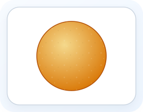
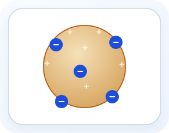
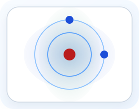
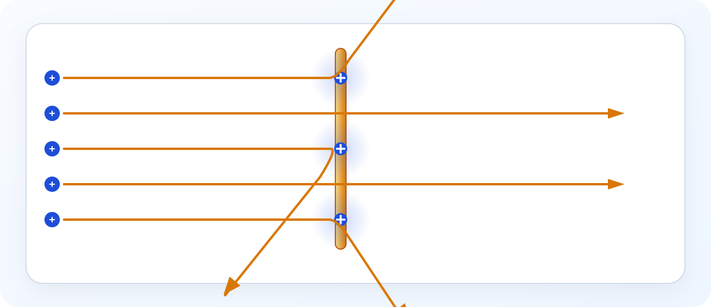

Dalton
1803
Idea: atom = solid, indivisible sphere
Limit: could not explain electrons
Start here if protons, neutrons, electrons, isotopes, and ions still feel like separate facts. This unit pulls them together into one system you can use, building directly from matter classification and setting up electron configuration.
What you'll learn
In the early 1800s, John Dalton proposed the first modern atomic theory based on experimental evidence. Start here with the big idea: scientists kept changing the atomic model when new evidence forced them to. That pattern matters more than memorizing dates.
Each new model explained evidence the older one could not.

1803
Idea: atom = solid, indivisible sphere
Limit: could not explain electrons

1897
Idea: negative electrons embedded in a diffuse positive sphere
Limit: no nucleus and no mostly empty space
1911
Idea: tiny positive nucleus in mostly empty space
Evidence: gold foil deflections

1913 and beyond
Bohr: electrons occupy fixed energy levels
Quantum: electrons are described by probability clouds, not exact paths
Big shift: the atom changed from a featureless sphere to a tiny nucleus with electrons arranged by energy and probability.
Each model replaced the one before it when new experimental evidence appeared — the nuclear model you use today came from that sequence.
Here is what Dalton got right — and what the later models kept from his original theory.
All matter is ultimately composed of atoms, which cannot be created, destroyed, or divided by ordinary chemical means.
Dalton used this idea to explain why each element behaves in its own consistent way. We now know isotopes exist, but the proton count still defines the element.
Water is always 2 hydrogen atoms for every 1 oxygen atom — no matter the source. This explains the law of definite proportions.
This is the atomic explanation for the law of conservation of mass. The same atoms are present before and after any reaction; they just bond differently.
That fourth point is the one that shows up in every stoichiometry and reaction unit — conservation of mass starts here.
A sequence of experiments in the late 1800s and early 1900s showed that atoms are not indivisible after all. Instead, they contain smaller particles and a tiny dense nucleus. Notice the pattern: each experiment answered a different question about what is inside the atom.
| Experiment | Scientist | Discovery |
|---|---|---|
| Cathode ray tube | J.J. Thomson (1897) | Electrons — small, negatively charged particles in all atoms |
| Oil drop experiment | R. Millikan (1909) | Measured the fundamental charge of a single electron: −1.602 × 10⁻¹⁹ C |
| Gold foil experiment | E. Rutherford (1911) | Small, dense, positively charged nucleus at the center; mostly empty space |
| Nuclear bombardment | J. Chadwick (1932) | Neutrons — neutral particles in the nucleus with mass ≈ proton |
Keep the big outcome in view: atoms contain electrons outside the nucleus, while protons and neutrons are in the nucleus. The next section turns that idea into the counting rules you will actually use.
Rutherford's gold foil experiment

Most of the atom is empty space.
Positive charge is concentrated, not spread out.
A tiny dense positive nucleus causes the sharp turn. This is the result that surprised Rutherford most, and it is the one exam questions almost always ask about.
The modern atom has a tiny, dense nucleus containing protons and neutrons, surrounded by electrons in a much larger region of space. The nucleus is extremely small compared with the full atom, which is why Rutherford's results mattered so much.
Do not miss this: most of the counting in this unit comes from only four relationships. If this feels shaky, master those before moving on. Unit 04 builds from this section into how electrons are arranged.
| Particle | Symbol | Charge | Mass (amu) | Location |
|---|---|---|---|---|
| Proton | p⁺ | +1 | 1.0073 | Nucleus |
| Neutron | n⁰ | 0 | 1.0087 | Nucleus |
| Electron | e⁻ | −1 | 0.00055 | Outside nucleus |
The one students miss most often: neutrons. You do not read neutrons from the periodic table — you calculate them as A − Z.
Every element is defined by its atomic number (Z), which is the number of protons. No two elements share the same Z. The mass number (A) is the total count of protons plus neutrons in the nucleus. Keep the jobs separate: Z identifies the element, A identifies the isotope.
We write nuclear symbols in the form:
We also write isotopes using a hyphen notation: sodium-23 or Na-23. Both mean the same thing.
Isotopes are atoms of the same element with the same number of protons but different numbers of neutrons. That changes the mass number, not the identity of the element. Most elements exist as a mixture of isotopes in nature, which is why periodic-table atomic masses are usually decimals.
| Element | Isotope | Protons | Neutrons | Natural Abundance |
|---|---|---|---|---|
| Hydrogen | ¹H (protium) | 1 | 0 | 99.985% |
| Hydrogen | ²H (deuterium) | 1 | 1 | 0.015% |
| Carbon | ¹²C | 6 | 6 | 98.93% |
| Carbon | ¹³C | 6 | 7 | 1.07% |
| Chlorine | ³⁵Cl | 17 | 18 | 75.77% |
| Chlorine | ³⁷Cl | 17 | 20 | 24.23% |
Before calculating, make a quick prediction: the average atomic mass must fall between the isotope masses and be closer to the more abundant isotope. This prediction step catches most arithmetic mistakes before they cost you points.
The average atomic mass on the periodic table is a weighted average of all naturally occurring isotopes:
A neutral atom has equal numbers of protons and electrons. When electrons are gained or lost, the atom becomes an ion, a charged particle. Start here with the simplest rule: protons stay the same, electrons change.
| Change | Result | Charge | Name |
|---|---|---|---|
| Lose electrons | More protons than electrons | Positive | Cation |
| Gain electrons | More electrons than protons | Negative | Anion |
Notice the sign on Cl⁻: you are subtracting a negative number, so the electron count goes up, not down. That is where most arithmetic mistakes happen.
Chemical formulas use element symbols and subscripts to represent compounds. For this unit, focus on two questions first: which atoms are present and how many of each atom are there. If this feels shaky, slow down here, because formula reading keeps showing up in nomenclature, moles, and stoichiometry later on.
| Formula Type | Shows | Example (glucose) |
|---|---|---|
| Molecular formula | Exact number of each atom in one molecule | C₆H₁₂O₆ |
| Empirical formula | Simplest whole-number ratio of atoms | CH₂O |
Subscripts in formulas apply only to the atom symbol immediately to their left. Parentheses group a unit, and a subscript outside the parentheses multiplies everything inside.
One atomic mass unit (amu) is defined as exactly 1/12 the mass of a carbon-12 atom. This tiny unit bridges atomic and laboratory scales through Avogadro's number, the number of particles in one mole (mol). Notice how this section acts like a preview of mole chemistry rather than a full mole lesson.
If carbon-12 has a mass of 12.000 amu per atom, then exactly 6.022 × 10²³ carbon-12 atoms have a mass of exactly 12.000 grams. This is why the atomic mass in amu numerically equals the molar mass in g/mol.
When you use molar mass in calculations later, the number comes from the periodic table atomic mass — and now you know why it looks the way it does.